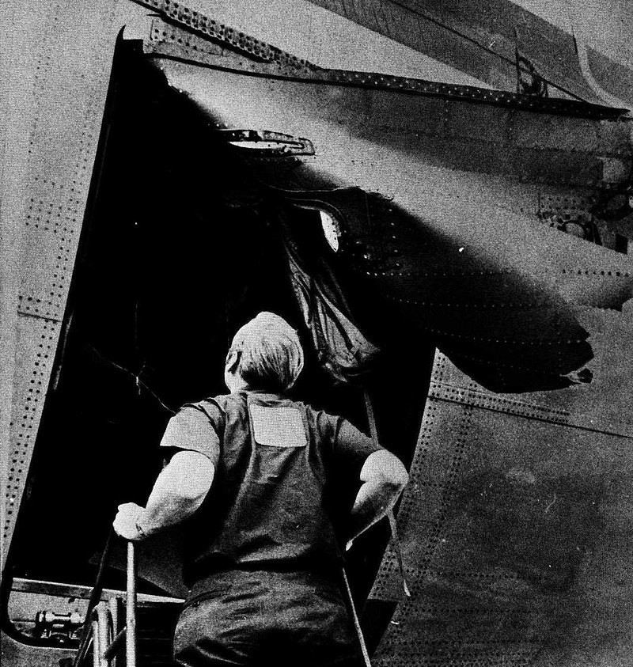

The DC-10, developed by McDonnell Douglas, emerged as a groundbreaking innovation in the aviation
industry during the late 1960s and early 1970s. Its creation was driven by the demand for an advanced,
larger, and more efficient jetliner to replace aging aircraft like the DC-8. Simultaneously, McDonnell
Douglas aimed to compete with the Boeing 747, which was making headlines as the first jumbo
jet.
Recognizing the need for a high-capacity aircraft that could handle both domestic and international
routes, the company began designing the DC-10 with a passenger capacity ranging between 250 and 380
seats, depending on the configuration.
The design of the DC-10 stood out due to its unique tri-jet
configuration, featuring three engines: two
mounted under each wing and a third integrated into the base of the vertical stabilizer at the tail.
This arrangement balanced the need for sufficient power while maintaining fuel efficiency, which was a
significant concern in the industry at the time. Engineers prioritized optimizing the aircraft’s range,
enabling it to undertake long-haul flights while meeting the operational needs of major airlines.
Additionally, the design offered more redundancy than twin-engine planes of the era, adding to its
appeal in terms of safety and performance.
When the DC-10 made its commercial debut in 1970, it garnered
considerable attention for its advanced
technological features. These included state-of-the-art avionics, which enhanced navigation and
operational reliability, and an innovative cabin layout that focused on passenger comfort. Airlines
could configure the cabin with luxurious wide-body seating and additional amenities, setting a new
standard for passenger experience. Furthermore, the DC-10 boasted a longer range compared to many
contemporaneous airliners, making it ideal for international routes connecting distant global
destinations.
Early Success of the DC-10
Upon its introduction, the DC-10 quickly became a favored choice among airlines, praised for its
capacity, efficiency, and range. Its ability to carry up to 380 passengers on long-haul flights aligned
perfectly with the increasing demand for international air travel during the 1970s. As airlines sought
more fuel-efficient aircraft to meet rising passenger numbers, the DC-10 stood out for its advanced
technology and large cargo capacity, making it an ideal solution for both commercial and cargo flights.
By the mid-1970s, the DC-10 was firmly established as a key player in global aviation, securing a
competitive spot alongside other popular models such as the Boeing 747. The aircraft was widely used by
airlines for both passenger and cargo operations due to its versatility, which allowed it to operate
efficiently on a variety of routes. Its spacious design made it particularly popular for
transcontinental flights, which were on the rise during this period. Furthermore, the DC-10's large
capacity helped lower ticket prices for passengers, making long-distance air travel more accessible to
the general public.
Everything seemed to be going well.
The First Accident
American Airlines Flight 96
On June 12, 1972, American Airlines Flight 96 was en route from
Detroit to New York when a cargo door failed to latch properly. The resulting explosive decompression
caused the loss of the door and severe fuselage damage, which disabled the aircraft's hydraulic and
control systems. Despite this, the crew managed to perform an emergency
landing back at Detroit
Metropolitan Airport, saving all 63 people on board.

The investigation found that the cargo door latch failure was due to the design of the DC-10’s doors,
which allowed pressure inside the plane to force the seal loose. In response, the FAA and McDonnell
Douglas redesigned the cargo door locking mechanism and increased safety protocols to prevent similar
incidents.
Accidents
After the American Airlines Flight 96 incident in 1972, which highlighted critical safety concerns
involving the DC-10's cargo door, a series of additional accidents would lead to greater scrutiny and
significant changes to the aircraft’s design and operational procedures. Despite the initial success of
the DC-10 and its wide adoption by major airlines, the subsequent accidents severely impacted its
reputation and called into question its safety features.
Following Flight 96, one of the significant crashes was TWA Flight 800 in 1973, which resulted in a fire
in the cargo hold due to a mechanical failure, though the aircraft was able to return safely to the
airport. This incident highlighted concerns about the DC-10's cargo door and fire safety mechanisms.
Air India Flight 855 (1982) was another tragic event involving a DC-10. The aircraft crashed into the
Arabian Sea shortly after takeoff from Mumbai, killing all 329 people on board. The investigation
revealed issues with the aircraft's autopilot system, contributing to the crash. This was a further blow
to the aircraft's reputation, as it emphasized the need for more reliable flight systems.
In addition to these, there were other accidents involving the DC-10, such as Japan Airlines Flight 123
in 1985, which, while not directly linked to a flaw in the DC-10 design, highlighted broader concerns
regarding airline safety procedures and maintenance practices. In total, the aircraft was involved in
several fatal crashes throughout its service life, though the reasons behind them varied.
As a result of these multiple accidents, McDonnell Douglas took extensive measures to redesign the
aircraft, improve safety protocols, and address the underlying issues, such as cargo door security,
engine mounting, and autopilot reliability. These changes led to a significant overhaul in both DC-10
operations and aircraft safety standards across the industry, helping to restore confidence in the
aircraft for years to come.
However, the aircraft's history was marred by a series of 55 accidents and incidents, including 32
hull-loss accidents, which resulted in a total of 1261 fatalities.
Safety Record
The McDonnell Douglas DC-10 has a mixed safety record, marked by numerous incidents
and
accidents during
its decades of operation. In total, the DC-10 was involved in 55
accidents, of which 32 were fatal,
resulting in over 1,400 fatalities. While the aircraft was popular with airlines for its
passenger and
cargo capabilities, several high-profile crashes and design flaws earned it a reputation for being
unsafe during its early years.
Metric
Value
Total Accidents
55
Fatal Accidents
32
Total Fatalities
1261
Deadliest Accident
346 fatalities
Legacy
The McDonnell Douglas DC-10 left a significant legacy in the world of aviation, despite its troubled
history with multiple accidents and safety concerns. Its design and operational capabilities helped
shape the future of commercial aviation, and the lessons learned from its flaws led to improvements in
aircraft design and safety protocols across the industry.
After the DC-10's production ceased, McDonnell Douglas continued to innovate and address the issues
highlighted by the DC-10's accidents, leading to the development of the MD-11, a larger and more refined
version of the DC-10. The MD-11 featured updated avionics, better fuel efficiency, and enhanced safety
features, aiming to fix the DC-10's earlier shortcomings. The MD-11, while not as successful in
commercial service as its predecessor, served well in cargo operations and was used for long-haul
flights until its retirement.
The legacy of the DC-10 also includes its role in McDonnell Douglas' eventual merger with Boeing in 1997.
The DC-10 and other McDonnell Douglas aircraft played a part in Boeing's acquisition of the company,
which helped strengthen Boeing's position in the commercial aviation market. After the merger, Boeing
integrated McDonnell Douglas designs into its own lineup, with many features of the DC-10 influencing
later models, such as the Boeing 777 and Boeing 767.
Despite the DC-10’s troubled reputation early on, it became a cornerstone for McDonnell Douglas, with its
production contributing to the financial growth of the company in the 1970s and 1980s. Its presence in
the skies during the 1970s and 1980s was a testament to its design’s enduring appeal, particularly for
airlines seeking a high-capacity, long-range aircraft.
The lessons learned from the DC-10, including improvements in safety protocols and engineering practices,
helped establish higher standards for airliner development. The aircraft's legacy continues to influence
the design and safety innovations of modern commercial jets.